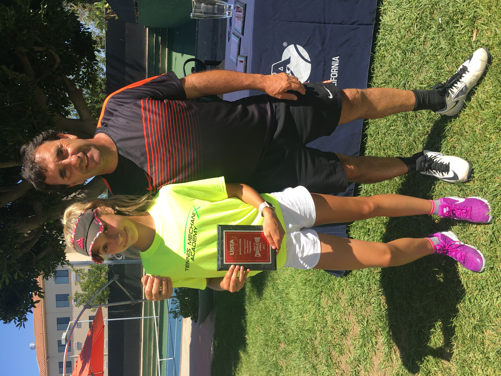
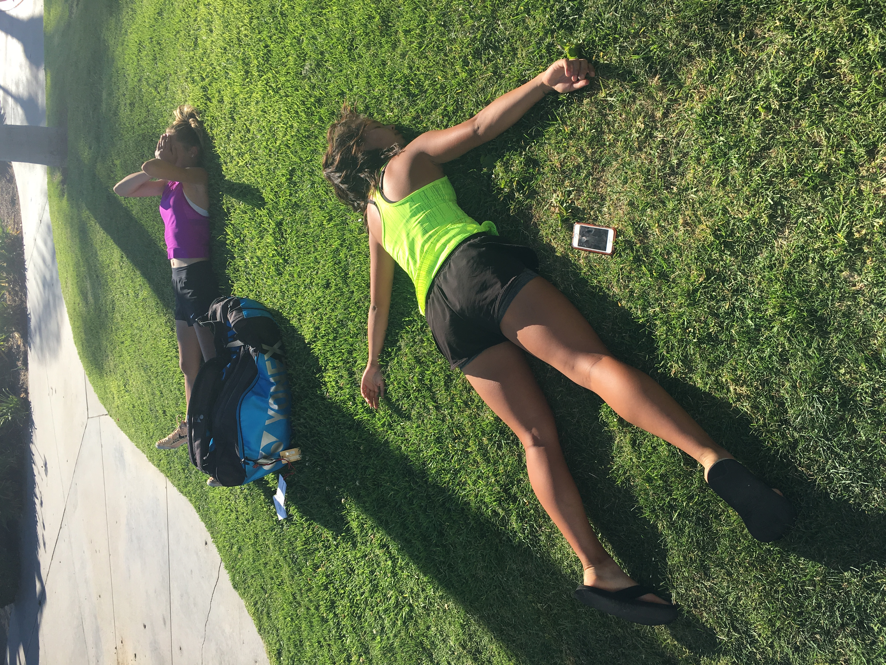
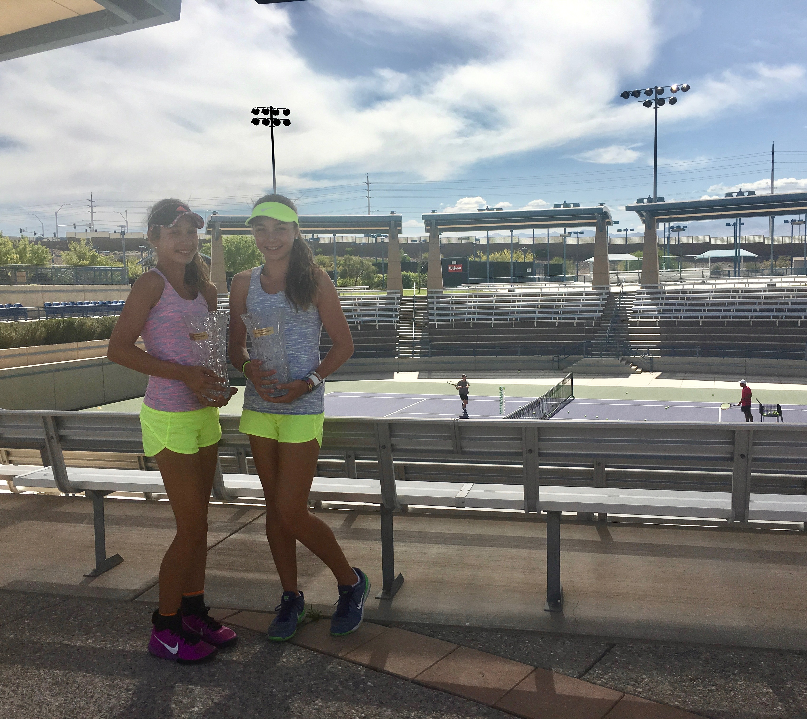

Training Background
Tennis has been one of the biggest parts of my life for as long as I can remember. From local parks to college competition, the sport has shaped who I am both on and off the court.
I started playing at 5 years old. Once I got a little better, I grew up training from ages 9 to 16 at Tennis Mechanix Academy in Burbank, California. I worked with many coaches, and several truly shaped me into not only a good tennis player, but also a good person.
I have traveled to several countries and over 35 states for junior tennis. Tennis became a major part of my life at a young age and helped shape who I am today. Looking back now, it is funny to think that I almost stayed with dance instead of tennis.

I also trained with private coaches who helped me develop my technique, confidence, and competitive mindset. Through years of 40+ hour practice weeks, tournaments, and traveling across the United States, I learned discipline, resilience, and how to handle pressure. These skills have significantly transferred into my daily life.

Practicing consistently throughout my junior years helped me improve both mentally and physically. The experience of training every day taught me how to stay disciplined and goal-oriented, even during long practices in the California heat. Featuring Natalie and I exhausted after a 6 hour practice in 115 degree LA weather.

Competing in junior tournaments gave me opportunities to travel, meet new people, and grow as an athlete. Some weekends meant waking up at 5 a.m. for matches, eating snacks between courts, and spending entire days at tournaments with my family. Featuring Raquel and I winning an L3 national tournament in Las Vegas, Nevada.
My tennis background eventually led me to compete at the college level, where I continued growing as both a collegiate athlete and a person. For four years, I played on a full scholarship at Loyola University Maryland in Baltimore, Maryland.
Tennis gave me experiences and memories that I will carry with me forever. Beyond the wins and losses, it taught me how to work hard, push through challenges, and build lifelong friendships.